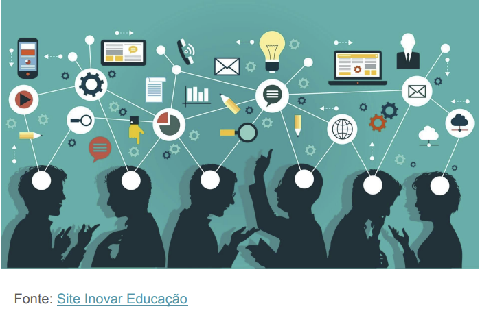
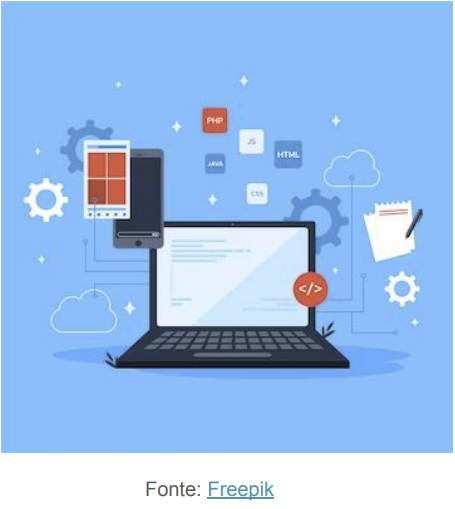
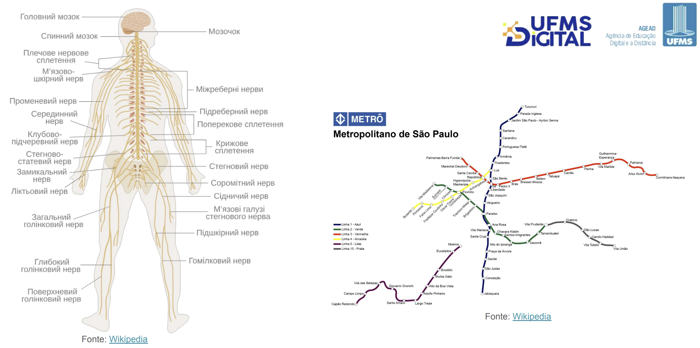

Disciplinas
SISTEMAS DE INFORMAÇÃO Concluído
Materiais
Vídeo 1 - [UFMS Digital] Sistemas de Informação - Módulo 1 - Unidade 1 - Introdução a sistemas de informação, visão da administração e da informática sendProf° ministrante: Awdren de Lima Fontão
Informação
- Segundo o dicionário:
- informação
- substantivo feminino
- 1. conjunto de conhecimentos reunidos sobre determinado assunto ou pessoa.
- 2. ato ou efeito de informar(-se); informe.
Informação
- Fundamental para o desenvolvimento econômico, ao lado do capital, trabalho e matéria-prima.
- O que confere um significado particular à informação nos dias de hoje é sua natureza digital.

Sistema
- Um conjunto integrado de partes, íntima e dinamicamente relacionadas que desenvolve uma atividade ou função e se destina a atingir um objetivo.
- Faz parte de um sistema maior (supra-sistema e que constitui seu ambiente) e é constituído de sistemas menores (subsistemas).


O que a área de administração diz?
- Para Laudon e Laudon (2016), os sistemas de informação são sistemas sociotécnicos, que envolvem a coordenação de tecnologia, organizações e pessoas;
- Devem cooperar e se ajudar mutuamente para otimizar o desempenho do sistema completo, modificando-se e se ajustando de acordo com a demanda solicitada.
O que a área de computação diz?
- Originado de teorias sobre sistemas mecânicos, orgânicos, econômicos e sociais (Araujo; Siqueira, 2023);
- Urgência de examinar o design, o desenvolvimento e os impactos das tecnologias da informação nos contextos organizacionais, especialmente no âmbito dos negócios;
- Concentração nas soluções computacionais voltadas para o processamento de informações e nas necessidades dessas soluções.
Seguimos com a seguinte definição:
- Um conjunto de componentes inter-relacionados que coletam (ou recuperam), processam, armazenam e distribuem informações destinadas a apoiar a tomada de decisões, a coordenação e o controle de uma organização.
Os SI servem para:
- Aprimoramento da Tomada de Decisão: fornecem dados analíticos para suportar decisões estratégicas (Laudon; Laudon, 2016).
- Automação de Processos de Negócios: contribuem para a automação de tarefas rotineiras, aumentando a produtividade (O'Brien, 2011).
- Gestão Eficiente de Recursos: facilitam o controle e a alocação eficiente de recursos organizacionais (Stair; Reynolds, 2018).
- Aprimoramento da comunicação interna e externa: facilitam a comunicação eficaz entre equipes internas e partes interessadas externas (Turban et al., 2017).
- Inovação e vantagem competitiva: permitem inovação contínua e proporcionam uma vantagem competitiva por meio do uso estratégico da informação (Pearlson; Saunders, 2013).